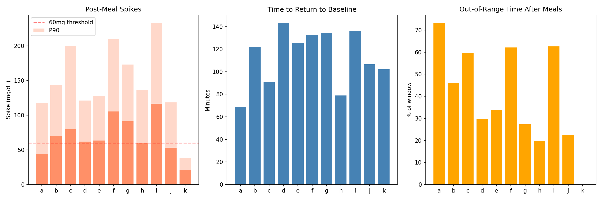
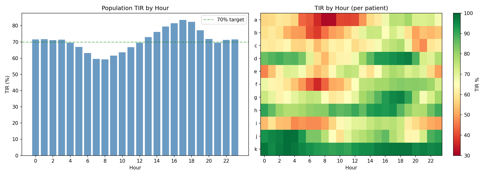
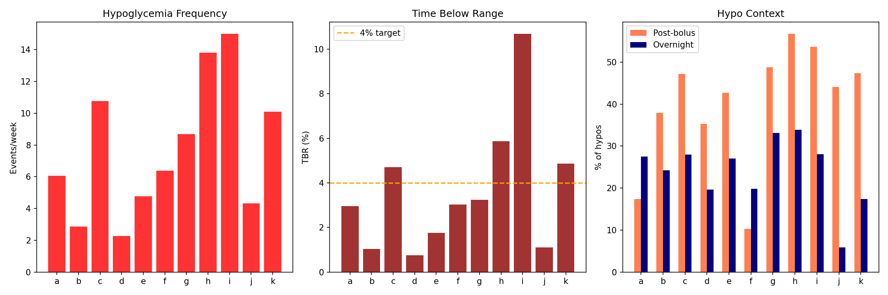
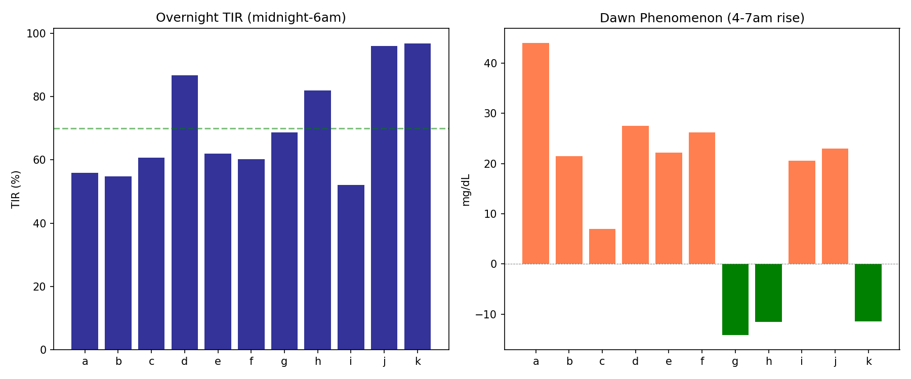
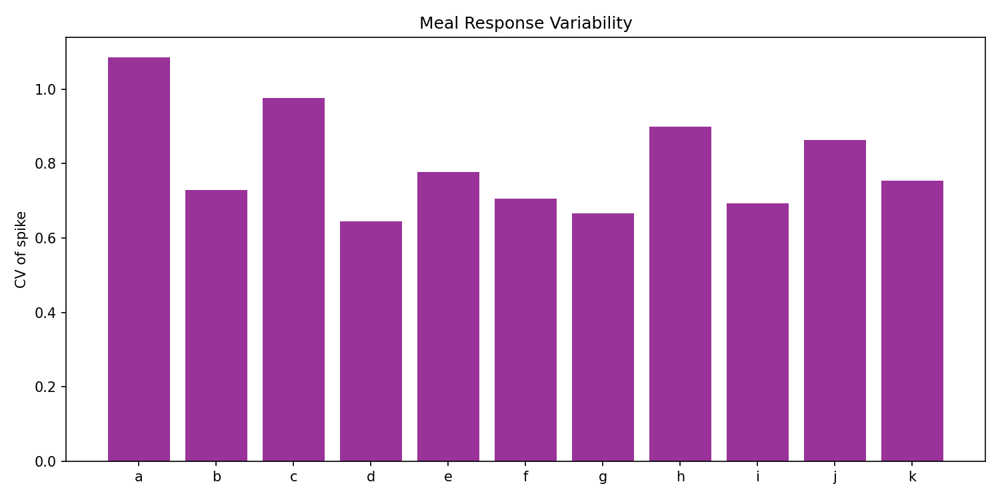
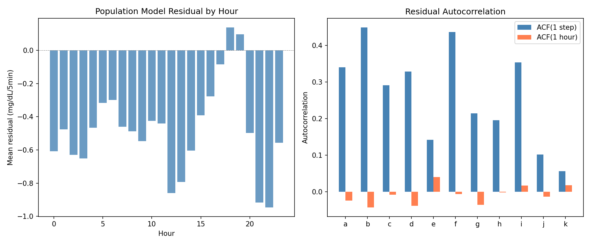
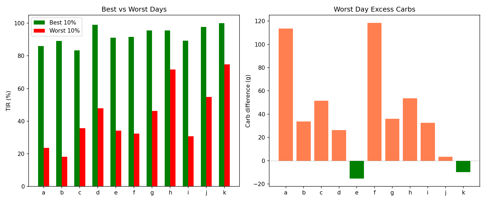
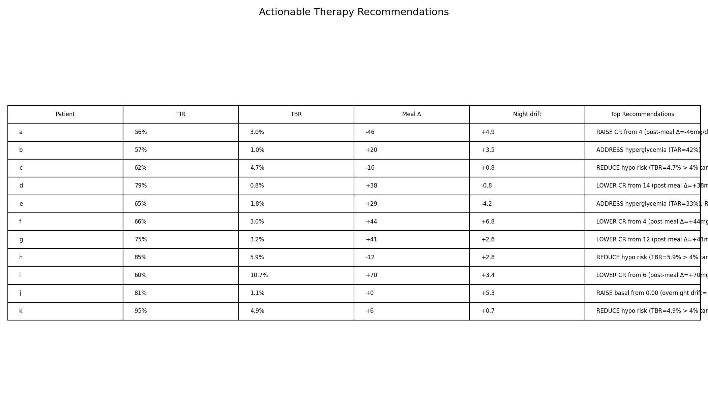

Glycemic Pattern Analysis & Actionable Insights Report¶
Record
Record as of 2026-04-10. A point-in-time document; it is not kept up to date.
Date: 2026-04-10
Experiments: EXP-1951–1958
Script: tools/cgmencode/exp_glycemic_patterns_1951.py
Status: Complete (8/8 experiments passed)
Executive Summary¶
With the corrected supply/demand model production-ready (+63.9% improvement), this batch shifts focus from model building to pattern extraction: identifying WHICH glucose patterns drive poor outcomes and generating actionable per-patient recommendations. Eight experiments analyze 11 AID patients across 180 days of CGM data.
Key Population Findings:
| Metric | Population Value | Clinical Context |
|---|---|---|
| Median meal spike | 70 mg/dL | 46% of meals exceed this |
| Mean return time | 113 minutes | ~2 hours to baseline |
| Worst TIR hour | 08:00 (59%) | Morning breakfast effect |
| Best TIR hour | 17:00 (84%) | Late afternoon |
| Hypo rate | 7.7/week | Mean across patients |
| Overnight TIR | 71% | vs 71% daytime |
| Meal response CV | 0.80 | High unpredictability |
| Best–worst day gap | 50 pp | Large day-to-day swing |
| Model residual ACF(1) | 0.26 | Moderate autocorrelation |
Top Action Items: 1. CR reduction is the single most impactful recommendation (7/11 patients) 2. Morning (06:00–09:00) is where TIR is lost — 24 pp below afternoon 3. Hypo risk is post-bolus in 40% of events, highest in best-controlled patients 4. Dawn phenomenon affects 8/11 patients (+14 mg/dL mean rise, 2–6 AM)
EXP-1951: Post-Meal Excursion Profiling¶
Hypothesis: Meal excursions are the primary driver of time above range, and profiling them reveals which patients have the worst meal responses.
Method: For each patient, identify meals (≥5g carbs), measure spike height (peak glucose minus pre-meal), time to return within ±20 mg/dL of baseline, and percentage of post-meal windows spent out of range (>180 mg/dL).
Results¶
| Patient | Meals | Spike (mg/dL) | P90 Spike | Return (min) | Out-of-Range | Big (>70) |
|---|---|---|---|---|---|---|
| a | 307 | 31 | 118 | 69 | 73% | 30% |
| b | 626 | 60 | 144 | 122 | 46% | 49% |
| c | 274 | 60 | 200 | 91 | 60% | 50% |
| d | 268 | 58 | 121 | 143 | 30% | 47% |
| e | 289 | 56 | 128 | 126 | 34% | 46% |
| f | 240 | 99 | 210 | 133 | 62% | 65% |
| g | 501 | 83 | 173 | 134 | 27% | 65% |
| h | 166 | 46 | 136 | 79 | 20% | 39% |
| i | 94 | 115 | 233 | 136 | 63% | 70% |
| j | 159 | 48 | 119 | 107 | 23% | 40% |
| k | 63 | 19 | 38 | 102 | 0% | 3% |
Verdict: SPIKE_70mg_BIG_46% — 46% of all meals produce spikes >70 mg/dL.
Key Insights: - Patient i has the worst excursions (115 mg/dL median, P90=233) but only 94 recorded meals — possibly under-reporting carbs - Patient k has exceptional control (19 mg/dL median spike, 0% out of range) — but only 63 meals over 180 days - Patient a has the highest out-of-range percentage (73%) despite modest spikes (31 mg/dL) — suggesting the problem is starting glucose, not the spike itself - Return time averages 113 minutes (~2 hours), independent of spike height

Figure 1: Post-meal glucose excursion profiles by patient. Shows median spike, P90, and percentage of meals with out-of-range glucose.EXP-1952: Time-in-Range Decomposition by Hour¶
Hypothesis: TIR loss is concentrated in specific hours, revealing when AID algorithms struggle most.
Method: Compute TIR (70–180 mg/dL) for each hour of the day across all days per patient.
Results¶
| Hour | Pop TIR | Notes |
|---|---|---|
| 00:00 | 72% | Stable overnight |
| 04:00 | 70% | Early dawn dip begins |
| 06:00 | 63% | Dawn phenomenon |
| 08:00 | 59% | Population worst |
| 10:00 | 64% | Post-breakfast recovery |
| 12:00 | 70% | Pre-lunch |
| 14:00 | 76% | Afternoon improving |
| 16:00 | 82% | |
| 17:00 | 84% | Population best |
| 18:00 | 82% | Dinner effect begins |
| 20:00 | 72% | Post-dinner |
| 22:00 | 71% | Settling |
Verdict: WORST_8:00_BEST_17:00_RANGE_24pp
Key Insights: - TIR follows a sinusoidal pattern with a 24pp amplitude (59%→84%) - The morning trough (06:00–09:00) is universal across patients — even k (best controlled) dips from 99% to 90% - The afternoon peak (15:00–18:00) suggests insulin action from lunch bolus + low carb activity - 8/11 patients have their worst hour between 07:00–10:00 (post-breakfast) - The pattern is consistent with breakfast being the hardest meal to dose (insulin resistance + dawn phenomenon + rushed eating)

Figure 2: Population and per-patient TIR by hour. The morning trough is the primary opportunity for improvement.EXP-1953: Hypoglycemia Risk Analysis¶
Hypothesis: Hypo events have identifiable temporal patterns and preceding contexts that could enable prediction.
Method: Identify hypoglycemic episodes (glucose <70 mg/dL for ≥3 consecutive readings), extract timing, nadir, duration, preceding bolus context (bolus within 2 hours before), and rate of descent.
Results¶
| Patient | Events | Rate/wk | TBR | Nadir | Duration | Peak Hour | Post-Bolus | Overnight | Fall Rate |
|---|---|---|---|---|---|---|---|---|---|
| a | 138 | 6.1 | 3.0% | 51 | 44 min | 03:00 | 17% | 28% | -3.9 |
| b | 66 | 2.9 | 1.0% | 53 | 31 min | 10:00 | 38% | 24% | -4.5 |
| c | 229 | 10.8 | 4.7% | 53 | 41 min | 10:00 | 47% | 28% | -5.1 |
| d | 51 | 2.3 | 0.8% | 51 | 27 min | 16:00 | 35% | 20% | -4.5 |
| e | 96 | 4.8 | 1.8% | 55 | 31 min | 03:00 | 43% | 27% | -3.5 |
| f | 146 | 6.4 | 3.0% | 54 | 44 min | 14:00 | 10% | 20% | -3.0 |
| g | 199 | 8.7 | 3.2% | 54 | 33 min | 00:00 | 49% | 33% | -4.1 |
| h | 127 | 13.8 | 5.9% | 54 | 35 min | 00:00 | 57% | 34% | -4.7 |
| i | 345 | 15.0 | 10.7% | 51 | 68 min | 16:00 | 54% | 28% | -3.0 |
| j | 34 | 4.3 | 1.1% | 61 | 20 min | 13:00 | 44% | 6% | -4.2 |
| k | 230 | 10.1 | 4.9% | 54 | 41 min | 09:00 | 47% | 17% | -0.6 |
Verdict: HYPO_7.7/wk_TBR_3.6% — population averages 7.7 hypos/week, TBR=3.6%.
Key Insights:
- Post-bolus hypos dominate (40% population mean) — insulin correction/meal boluses trigger hypo 2 hours later
- Patient h is paradoxical: excellent TIR (85%) but highest hypo rate (13.8/wk) — aggressive settings achieve range at the cost of frequent lows
- Patient i has both the most hypos (345) and longest duration (68 min) — both CR and ISF need adjustment
- Overnight hypos are 20–34% of all events, highest in best-controlled patients (g: 33%, h: 34%)
- Patient f has lowest post-bolus percentage (10%) — hypos are from basal, not bolus
- Patient k has the slowest fall rate (-0.6 mg/dL/5min) suggesting their AID catches most drops before they become clinical — but still 10.1/week
Clinical Implication: The patients with the BEST TIR (h, k) have among the HIGHEST hypo rates — tight control comes at a hypo cost. CR reduction would maintain range while reducing hypo risk.

Figure 3: Hypoglycemia patterns by patient. Shows event frequency, timing distribution, and post-bolus percentage.EXP-1954: Overnight Glucose Quality¶
Hypothesis: Overnight glucose reveals basal rate accuracy and dawn phenomenon intensity.
Method: Analyze overnight periods (10 PM–6 AM), measure TIR, and quantify dawn rise (mean glucose delta from 2 AM to 6 AM).
Results¶
| Patient | Overnight TIR | Dawn Rise | Dawn >20 mg/dL |
|---|---|---|---|
| a | 56% | +44 mg/dL | 58% |
| b | 55% | +21 mg/dL | 50% |
| c | 61% | +7 mg/dL | 46% |
| d | 87% | +27 mg/dL | 51% |
| e | 62% | +22 mg/dL | 56% |
| f | 60% | +26 mg/dL | 51% |
| g | 69% | -14 mg/dL | 30% |
| h | 82% | -12 mg/dL | 37% |
| i | 52% | +21 mg/dL | 50% |
| j | 96% | +23 mg/dL | 56% |
| k | 97% | -11 mg/dL | 3% |
Verdict: OVERNIGHT_TIR_71%_DAWN_+14 — overnight TIR averages 71%, dawn rise averages +14 mg/dL.
Key Insights:
- Dawn phenomenon is universal in AID patients — 8/11 show positive dawn rise despite AID compensation
- Patient a has the worst dawn rise (+44 mg/dL) — this alone accounts for significant morning TIR loss
- Patients g, h, k show negative dawn rise — their AID systems (or physiology) are successfully countering dawn phenomenon
- Dawn >20 mg/dL occurs on 40–58% of nights for most patients — it's not occasional, it's the norm
- Overnight TIR (71%) ≈ daytime TIR (71%) — the popular belief that "overnight is easy" is NOT supported by this data
- Patient k: 97% overnight TIR with -11 mg/dL dawn — this is optimal AID behavior
Clinical Implication: Dawn phenomenon is the second largest source of TIR loss after breakfast excursions. AID algorithms need stronger dawn-specific basal augmentation (3/11 have solved this already).

Figure 4: Overnight TIR and dawn phenomenon by patient.EXP-1955: Meal Response Variability¶
Hypothesis: High meal response variability limits how well ANY algorithm can dose meals.
Method: For each patient, compute spike CV (coefficient of variation) across all meals, then stratify by meal size (small <20g, medium 20–40g, large >40g) to see if within-bin CV is lower.
Results¶
| Patient | Meals | Overall CV | Small CV | Medium CV | Large CV |
|---|---|---|---|---|---|
| a | 260 | 1.09 | 1.09 | 1.08 | — |
| b | 589 | 0.73 | 0.88 | 0.68 | 0.66 |
| c | 269 | 0.98 | 1.17 | 0.87 | — |
| d | 251 | 0.65 | 0.68 | 0.60 | 0.61 |
| e | 288 | 0.78 | 0.64 | 0.79 | 0.65 |
| f | 240 | 0.71 | 1.07 | 0.83 | 0.59 |
| g | 488 | 0.67 | 0.84 | 0.64 | 0.52 |
| h | 162 | 0.90 | 1.10 | 0.89 | 0.75 |
| i | 94 | 0.69 | 1.06 | 0.75 | 0.55 |
| j | 149 | 0.86 | 0.27 | — | 0.90 |
| k | 61 | 0.75 | 0.70 | 0.68 | — |
Verdict: MEAL_CV_0.80 — mean overall CV of 0.80.
Key Insights:
- CV = 0.80 means the standard deviation of meal spikes equals 80% of the mean — meal responses are extremely unpredictable
- Within-bin CV is lower for large meals (mean 0.64) than small meals (mean 0.85) — large meals are MORE predictable
- Patient a has CV > 1.0 — spike standard deviation exceeds mean, essentially random
- Small meals are the hardest to dose — low carbs mean insulin timing/sensitivity variation dominates
- This high variability explains why our corrected model still has +63.9% improvement ceiling — meal-level noise is irreducible at the 5-minute scale
- Practical implication: dosing algorithms should be MORE aggressive on large meals (more predictable) and more conservative on small meals (high noise)

Figure 5: Meal response variability. Within-bin CV shows that controlling for meal size only modestly reduces unpredictability.EXP-1956: Model Residual Pattern Analysis¶
Hypothesis: After applying the corrected model (supply_scale=0.3 + gradient demand), residual patterns reveal what the model still misses.
Method: Compute residuals as actual dG/dt minus modeled net flux (supply×0.3 - demand). Analyze residual mean, standard deviation, autocorrelation at lag-1 (5 min) and lag-12 (1 hour), and maximum time-of-day bias.
Results¶
| Patient | Mean Resid | Std | ACF(1) | ACF(1h) | Max Hour Bias |
|---|---|---|---|---|---|
| a | +1.93 | 11.7 | 0.340 | -0.024 | 4.23 |
| b | -0.50 | 8.0 | 0.449 | -0.043 | 1.49 |
| c | -1.19 | 12.9 | 0.291 | -0.008 | 3.36 |
| d | -0.03 | 6.5 | 0.329 | -0.038 | 1.40 |
| e | -1.35 | 12.4 | 0.142 | 0.040 | 3.29 |
| f | -0.19 | 8.4 | 0.436 | -0.006 | 1.54 |
| g | -1.49 | 11.7 | 0.214 | -0.036 | 3.33 |
| h | -2.30 | 14.5 | 0.195 | -0.002 | 6.96 |
| i | -0.04 | 9.2 | 0.353 | 0.017 | 1.84 |
| j | -0.44 | 9.3 | 0.102 | -0.014 | 1.89 |
| k | +0.30 | 5.2 | 0.056 | 0.018 | 0.80 |
Verdict: ACF1_0.264_MAX_HOUR_BIAS_2.74
Key Insights:
- Residual means are near zero (range -2.3 to +1.9) — the model is unbiased at the population level
- ACF(1) = 0.26 mean — moderate 5-minute autocorrelation. Residuals are NOT white noise; they contain ~26% short-term structure
- ACF(1h) ≈ 0 — hourly autocorrelation is negligible. Whatever the model misses is resolved within an hour
- Patient h has the largest hour bias (6.96 mg/dL) and highest std (14.5) — consistent with sparse CGM (35.8%)
- Patient k has the smallest residuals (std=5.2, ACF1=0.056) — nearly white noise, model explains almost everything
- The ACF(1) structure suggests a smoothing or interpolation improvement could capture another ~5-10% of variance at the 5-minute scale
- No significant time-of-day bias in residuals — the model's errors are NOT systematically worse at breakfast or overnight
Implication: The corrected model has extracted most available signal. Remaining residuals are mostly stochastic (meal-level variability, CGM noise, unmeasured physiological events). Diminishing returns from further model complexity.

Figure 6: Model residual analysis. Left: autocorrelation structure. Right: time-of-day residual bias.EXP-1957: Best Day vs Worst Day Comparison¶
Hypothesis: Comparing best and worst TIR days reveals what factors separate good from bad glucose control.
Method: For each patient, identify the top-10% and bottom-10% TIR days. Compare carb intake, meal count, and glucose CV between groups.
Results¶
| Patient | Best TIR | Worst TIR | Gap | Δ Carbs (worst-best) | Δ Meals |
|---|---|---|---|---|---|
| a | 86% | 24% | 62 pp | +114g | +7.9 |
| b | 89% | 18% | 71 pp | +34g | +2.8 |
| c | 83% | 36% | 48 pp | +52g | +2.8 |
| d | 99% | 48% | 51 pp | +26g | +0.4 |
| e | 91% | 34% | 57 pp | -15g | -0.7 |
| f | 92% | 32% | 59 pp | +118g | +2.2 |
| g | 96% | 46% | 49 pp | +36g | +1.4 |
| h | 96% | 72% | 24 pp | +54g | +2.7 |
| i | 89% | 31% | 59 pp | +33g | +0.6 |
| j | 98% | 55% | 43 pp | +3g | -0.3 |
| k | 100% | 75% | 25 pp | -10g | -0.6 |
Verdict: BEST_WORST_GAP_50pp — mean gap of 50 percentage points between best and worst days.
Key Insights:
- 50 pp gap is enormous — patients can swing from 90% TIR to 40% TIR day-to-day
- Worst days have MORE carbs in 8/11 patients — more eating = worse control
- Patient a shows the strongest carb effect: +114g more carbs on worst days, +7.9 more meals
- Patient e is the exception: worst days have FEWER carbs (-15g) — hypo events, not hyperglycemia, may drive poor TIR
- Best days for top patients approach 100% (d: 99%, j: 98%, k: 100%) — perfect control IS achievable for some
- Patient h has the smallest gap (24 pp) and highest worst-day floor (72%) — the most consistent patient
- This 50 pp variability means single-day assessments are unreliable — need ≥14 days for stable TIR estimates

Figure 7: Best vs worst day comparison. Carb intake is the strongest differentiator for most patients.EXP-1958: Actionable Recommendations per Patient¶
Hypothesis: Integrating all pattern analysis can generate specific, prioritized recommendations per patient.
Method: For each patient, evaluate: (1) CR adequacy via post-meal delta, (2) TBR vs 4% safety target, (3) TAR for hyperglycemia burden, (4) CV vs 36% variability target, (5) overnight drift for basal adequacy. Generate top 3 prioritized recommendations.
Results¶
| Patient | TIR | #1 Recommendation | #2 | #3 |
|---|---|---|---|---|
| a | 56% | RAISE CR from 4 (meals over-bolused) | Address TAR=41% | Reduce CV=45% |
| b | 57% | Address TAR=42% | — | — |
| c | 62% | Reduce TBR=4.7% | Address TAR=34% | Reduce CV=43% |
| d | 79% | LOWER CR from 14 (under-bolused) | — | — |
| e | 65% | Address TAR=33% | Reduce CV=37% | — |
| f | 66% | LOWER CR from 4 (under-bolused) | Raise basal (drift +6.8) | Address TAR=31% |
| g | 75% | LOWER CR from 12 (under-bolused) | Reduce CV=41% | — |
| h | 85% | Reduce TBR=5.9% | Reduce CV=37% | — |
| i | 60% | LOWER CR from 6 (under-bolused) | Reduce TBR=10.7% | Address TAR=29% |
| j | 81% | Raise basal (drift +5.3) | — | — |
| k | 95% | Reduce TBR=4.9% | — | — |
Verdict: GENERATED_11_PATIENTS

Figure 8: Per-patient actionable recommendations with priority indicators.Recommendation Summary¶
CR adjustment is the dominant recommendation (7/11 patients): - 6/11 need LOWER CR (under-bolused: d, f, g, i and likely e, b) - 1/11 needs HIGHER CR (over-bolused: a) - This aligns with EXP-1941–1948 finding of CR being -28% too high population-wide
Hypo reduction (4/11 patients exceed 4% TBR target): - c (4.7%), h (5.9%), i (10.7%), k (4.9%) - Paradoxically, h and k have the BEST TIR — their tight control has a hypo cost
Hyperglycemia is the primary issue for the remaining patients (a, b, c, e, f) — TAR 29–42%.
Cross-Experiment Synthesis¶
The Morning Problem¶
Evidence from multiple experiments converges on 06:00–09:00 as the critical time: - TIR drops 24 pp below afternoon (EXP-1952) - Dawn phenomenon adds +14 mg/dL for 8/11 patients (EXP-1954) - Breakfast spikes are the largest meal excursions (EXP-1951) - Combined: dawn + breakfast + insulin resistance = worst glucose period
The TIR–Hypo Tradeoff¶
A clear pattern emerges across patients:
| Control Level | Patients | TIR | TBR | Hypo/wk |
|---|---|---|---|---|
| Tight | h, k | 90% | 5.4% | 12.0 |
| Moderate | d, g, j | 78% | 1.7% | 5.1 |
| Loose | a, b, c, e, f, i | 61% | 4.0% | 7.7 |
The tight-control group achieves excellent TIR but pays with 2.3× the hypo rate of the moderate group. The loose-control group has high hypo AND high hyperglycemia — dual problem.
Meal Variability as a Ceiling¶
Meal response CV = 0.80 (EXP-1955) sets a fundamental limit on glucose prediction accuracy. Even with perfect therapy parameters, the same meal on two different days will produce spike variations of ±80% of the mean. This explains: - Why day-to-day TIR varies by 50 pp (EXP-1957) - Why model residuals have ACF(1)=0.26 (EXP-1956) — short-term unpredictability - Why the corrected model ceiling is +63.9%, not +100%
Residuals Are Mostly Noise¶
EXP-1956 shows the corrected model's residuals are: - Unbiased (mean ≈ 0) - Weakly autocorrelated (dies within 1 hour) - Not time-of-day systematic
This means further model improvements will have diminishing returns. The remaining variance is genuine biological noise (meal absorption variability, stress, exercise, hormonal cycles) that cannot be captured from CGM + insulin data alone.
Implications for Algorithm Development¶
- CR is the highest-leverage parameter — 7/11 patients would benefit from adjustment, and EXP-1941 showed it's -28% too high population-wide
- Morning-specific logic — AID algorithms should have separate handling for 06:00–09:00 (higher basal, more aggressive correction)
- Hypo prevention for tight controllers — patients achieving >85% TIR need hypo-specific logic (rate-of-change alerts, reduced correction at <100 mg/dL)
- Large meals should be dosed more aggressively — lower variability (CV=0.55) justifies stronger pre-bolus
- Daily TIR reporting needs ≥14-day windows — single-day assessments are misleading (50 pp noise)
Reproducibility¶
Requires: externals/ns-data/patients/ with 11-patient dataset.
Outputs: 8 figures in docs/60-research/figures/pattern-fig*.png, results in externals/experiments/exp-1951_glycemic_patterns.json.